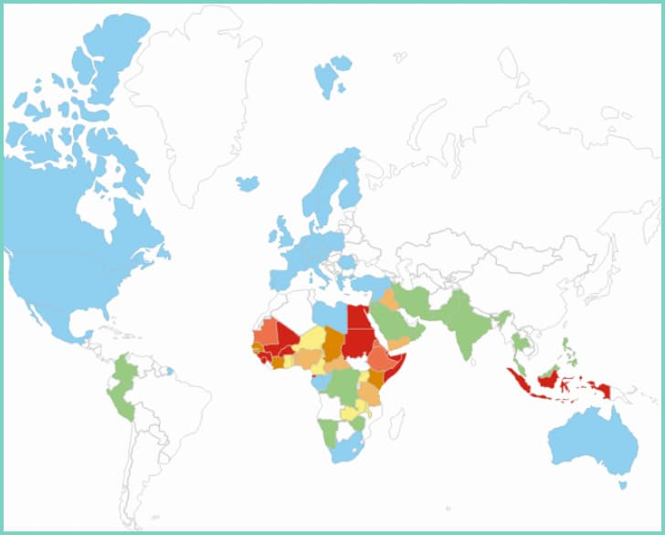
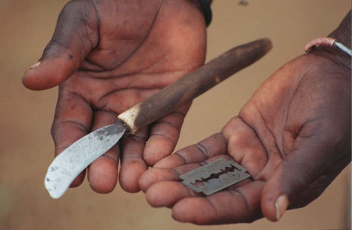

Article sur Waris Dirie
Découvrez qui est Waris, cette femme qui combat l’excision. Depuis qu’elle décida de parler de sa propre excision...
The excision is a genital mutilation.
Millions of women in the world have suffered.
In 2016, we can count 200 millions girls and womens who have suffered one excision, of which 1 million in Europe.
Elles se retrouvent enlevées du droit d’avoir du plaisir.
There a four types :

At Mali, Burkina Faso, Guinea, Sierra Leone, Egypt, Sudan, Equatorial Guinea, Somalia, Somaliland, and in Indonesia, 75% and 100% womens have suffered sexual mutilation feminine. They are principally in a country of Africa, and in South Asia that is practiced.

Often practised by old women, who learned from their mothers and have a special position in the community.
But since little time, in some countries, this practice is made for a medical professional, a fact that is less dangerous for health.
The scar on the vagina must be opened before sexual intercourse as well as during childbirth, which is extremely painful each time. Most of the time, it is a traditional birth attendant or the husband who incises the woman with a sharp instrument on the wedding day. Ideally, performed in the hospital. In another scenario, the husband gradually tears his new wife apart. The aim of this practice is for the man to prove his virility. After each childbirth, the sex of the woman is usually stitched up (we called this the re-infibulation.) For practice excision, is to use : razor blades, scissors, knife, shard of glass…

The Wound will be stitched up raw with non-sterile thread or any other sticky material.
Today when performed by professionals, it is done with surgical scissors and under anesthesia.
But obviously in both cases, physical risks are possible:
Hemorrhage, amnesia, urinary and menstrual problems, Infection, Death ...
But obviously in both cases, psychological risks are possible:
Depression, Anxiety, Le post-traumatic stress, Withdrawal and loss of self-esteem, The feeling of betrayal and incomprehension ...
Excision appeared before Christianity and Islam, but the origin does not is not really certain.
Research finds its origin in Nubia, in the Horn of Africa (today in Egypt and Sudan).
Egyptian mummies are said to present marks attesting to the practice.
Some believe that it was practiced by the women of Pharaonic society by the upper social classes. The practice then spread to the rest of the community.
Then by going to the east and west of Africa.
Over time, excision has become a tradition in many communities.
It was performed until 50 years to treat "diseases" :
This ritual is of another age, unfortunately excision still exists today in quite a few African countries, still a great many young girls undergo it, often before the age of 15.
Most of the societies where there are still exist because there remains a real inequality between the sexes.
It is a rite of passage for girls to become a woman.
Remember that female genital mutilation is not endorsed by Islam or Christianity, but unfortunately beliefs related to religion are frequently invoked to justify its practice.
Découvrez qui est Waris, cette femme qui combat l’excision. Depuis qu’elle décida de parler de sa propre excision...
Découvrez qui est Waris, cette femme qui combat l’excision. Depuis qu’elle décida de parler de sa propre excision...